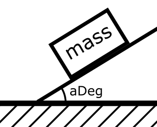

Проверка исходных данных
Основное внимание в этой практической работе уделено одной из техник защитного программирования - сообщениям об ошибке. Говорить пользователю о том, что он ввёл некорректные данные очень важно. Это может быть важнее, чем посчитать результат.
В программе нужно предусмотреть как минимум два варианта действий. Один - когда все данные корректны. Второй - когда исходные данные не подходят для выполнения расчетов. Для оформления нужно использовать конструкции ветвления.
9298
Задача
Дана длина ребра куба. Найти площадь его боковой поверхности по формуле area=6*edge2.
| Номер теста | Исходные данные (edge) | Результат |
|---|
| 1 | 1 | Площадь поверхности куба равна 6,0000 |
| 2 | 5 | Площадь поверхности куба равна 150,0000 |
| 3 | 0 | Значение edge должно быть положительным
|
| 4 | -2 | Значение edge должно быть положительным
|
Порядок решения задач с проверками исходных данных
Реализуйте чтение исходных данных
double edge;
edge = Double.Parse(Console.ReadLine());
Добавьте две конструкции ветвления: для корректных и некорректных данных. Всегда пишите фигурные скобочки у конструкций ветвления. Пишите открывающую и закрывающую скобку одновременно. Заполняйте внутреннее содержимое после того, как напишете открывающую и закрывающую часть блока. У людей часто возникают ошибки в логике программы из за того, что скобки расставлены неправильно.
double edge;
edge = Double.Parse(Console.ReadLine());
if () {
//сообщение об ошибке
}
if () {
//расчет и вывод результата
}
Подумайте, какое условие будет истинно для всех корректных данных, которые полезны для расчета результата.
double edge;
edge = Double.Parse(Console.ReadLine())
if () {
//сообщение об ошибке
}
if (edge > 0) {//условие для корректных данных
//расчет и вывод результата
}
Подумайте какое условие будет истинно для всех некорректных данных.
double edge;
edge = Double.Parse(Console.ReadLine())
if (edge <= 0) {//условие для некорректных данных
//сообщение об ошибке
}
if (edge > 0) {//условие для корректных данных
//расчет и вывод результата
}
Добавьте вычисления, вывод результата и сообщений об ошибке
double edge;
edge = Double.Parse(Console.ReadLine())
if (edge <= 0) {//условие для некорректных данных
//сообщение об ошибке
Console.WriteLine("Значение edge должно быть положительным");
}
if (edge > 0) {//условие для корректных данных
//расчет и вывод результата
double result;
result = 6 * edge * edge;
Console.WriteLine("Площадь поверхности куба равна {0:F4}", result);
}
Для сравнения можно применять следующие операторы:
- < Истинно, если значение слева меньше значения справа
- > Истинно, если значение слева больше значения справа
- <= Истинно, если значение слева меньше или равно значению справа
- >= Истинно, если значение слева больше или равно значению справа
- == Истинно, если значение слева строго равно значению справа
- != Истинно, если значение слева не равно значению справа
Обычно в шапке таблицы с тестовыми данными у исходных данных будут указаны предпочтительные имена. Как правило это существительные английского языка, которые упоминались на русском языке при постановке задачи. Заведите словарик и записывайте в него все новые слова и их перевод. На английском языке проще найти помощь и ответы на сложные вопросы. Все технологии и инструменты программирования публикуют информацию о себе на английском языке. Расширяйте свой словарный запас!
4312
Задача
Вычислить площадь прямоугольного треугольника по формуле area=edge*height/2, где edge - основание, height - высота.
| Номер теста | Исходные данные | Результат |
|---|
| edge | height |
| 1 | 1 | 1 | Площадь прямоугольного треугольника с высотой 1 и основанием 1 равна 0,5000 |
| 2 | 2 | 3 | Площадь прямоугольного треугольника с высотой 3 и основанием 2 равна 3,0000 |
| 3 | 0 | 10 | Длина основания треугольника должна быть положительна
|
| 4 | -2 | 1 | Длина основания треугольника должна быть положительна
|
| 5 | 3 | -4 | Высота треугольника должна быть положительна
|
| 6 | -5 | -7 | Длина основания треугольника должна быть положительна
Высота треугольника должна быть положительна
|
В этой задаче, корректные исходные данные нужно проверять двумя условиями. Длина основания должна быть положительна и одновременно высота должна быть положительна. Для оформления этой идеи в коде можно вкладывать одно условие внутри другого.
if (edge > 0) {//условие для корректных данных
if (height > 0) {
//вычисления и печать результата на экран
}
}
Обратите внимание, что ситуаций с неправильными данными может быть значительно больше, чем ситуаций с правильными данными. Код для предотвращения нежелательных ситуаций может получиться объемнее, чем код для решения задачи.
6522
Задача
Смешали volume1 литров воды с температурой temperature1 градусов Цельсия с volume2 литрами воды с температурой temperature2 градусов Цельсия. Вычислите объем volume=volume1+volume2 и температуру образовавшейся смеси по формуле
temperature=
(temperature1*volume1+temperature2*volume2)
volume1+volume2
Оформите результат по шаблону
Объем смеси: $volume л
Температура смеси: $temperature ℃
| Номер теста | Исходные данные | Результат |
|---|
| volume1 | temperature1 | volume2 | temperature2 |
|---|
| 1 | 1 | 30 | 3 | 20 | Объем смеси: 4,0000 л
Температура смеси: 22,5000 °C |
| 2 | 1 | -20 | 10 | 20 | Объем смеси: 11,0000 л
Температура смеси: 16,3636 °C |
| 3 | 5 | 90 | 1 | -10 | Объем смеси: 6,0000 л
Температура смеси: 73,3333 °C |
| 4 | -2 | 10 | 5 | 50 | Объем должен быть неотрицательным
|
| 5 | 4 | 100 | -10 | 4 | Объем должен быть неотрицательным
|
| 6 | 20 | -800 | 20 | 30 | Температура должна быть выше абсолютного нуля (-273.15)
|
| 7 | 20 | 10 | 30 | -500 | Температура должна быть выше абсолютного нуля (-273.15)
|
| 8 | -7 | -1000 | 6 | 71 | Объем должен быть неотрицательным
Температура должна быть выше абсолютного нуля (-273.15)
|
| 9 | 15 | -180 | -21 | 90 | Объем должен быть неотрицательным
|
| 10 | 31 | 10 | -2 | -300 | Объем должен быть неотрицательным
Температура должна быть выше абсолютного нуля (-273.15)
|
| 11 | -7 | -1000 | -21 | 71 | Объем должен быть неотрицательным
Объем должен быть неотрицательным
Температура должна быть выше абсолютного нуля (-273.15)
|
| 12 | 15 | -180 | -21 | -300 | Объем должен быть неотрицательным
Температура должна быть выше абсолютного нуля (-273.15)
|
| 13 | -7 | -400 | -5 | -500 | Объем должен быть неотрицательным
Объем должен быть неотрицательным
Температура должна быть выше абсолютного нуля (-273.15)
Температура должна быть выше абсолютного нуля (-273.15)
|
| 14 | 0 | 30 | 3 | 20 | Объем должен быть неотрицательным
|
| 15 | 5 | 90 | 0 | 40 | Объем должен быть неотрицательным
|
Представьте, что вы пишете программное обеспечение для банкомата. Полезным действием будет выдача банкнот. Пользователь пришел к банкомату, вставил карту, увидел что на счету 10 тысяч, нажал 'снять деньги' и ввел миллион. Банкомат выдал ему миллион, а затем написал сообщение 'недостаточно средств на счету'. Правильно ли действовал банкомат? Именно поэтому мы проверяем исходные данные перед тем, как совершаем полезные действия.
7619
Задача
Два автомобиля едут навстречу друг другу с постоянными скоростями velocity1 и velocity2 км/час. Определить, через какое время автомобили встретятся, если расстояние между ними было distance км.
| Номер теста | Исходные данные | Результат |
|---|
| velocity1 | velocity2 | distance |
|---|
| 1 | 31 | 47 | 6833 | Автомобили встретятся через 87,6026 часов |
| 2 | 0 | 7 | 6829 | Автомобили встретятся через 975,5714 часов |
| 3 | 6 | 0 | 100 | Автомобили встретятся через 16,6667 часов |
| 4 | 17 | 19 | 0 | Автомобили встретятся через 0,0000 часов |
| 5 | -11 | 13 | 200 | Скорость должна быть неотрицательна
|
| 6 | 79 | -67 | 400 | Скорость должна быть неотрицательна
|
| 7 | 10 | 20 | -500 | Расстояние должно быть неотрицательным
|
| 8 | -20 | -73 | 300 | Скорость должна быть неотрицательна
Скорость должна быть неотрицательна
|
| 9 | 60 | -120 | -600 | Скорость должна быть неотрицательна
Расстояние должно быть неотрицательным
|
| 10 | -2 | -3 | -1 | Скорость должна быть неотрицательна
Скорость должна быть неотрицательна
Расстояние должно быть неотрицательным
|
8833
Задача
Вычислить результат по формуле x. Сообщите об ошибке если пользователь ввел отрицательное число. Воспользуйтесь стандартной функцией вычисления корня:
result = Math.sqrt(x);
| Номер теста | Исходные данные (X) | Результат |
|---|
| 1 | 7606 | Корень из 7606,0000 равен 87,2124 |
| 2 | 9 | Корень из 9,0000 равен 3,0000 |
| 3 | 0 | Корень из 0,0000 равен 0,0000 |
| 4 | -7603 | Значение X должно быть неотрицательным
|
| 5 | -1 | Значение X должно быть неотрицательным
|
Сообщение об ошибке должно быть написано так, чтобы пользователь мог понять какие значения или действия от него ожидались. В некоторых случаях к сообщению добавляют код ошибки.
9020
Задача
Вычислить результат по формуле 361-x
| Номер теста | Исходные данные (X) | Результат |
|---|
| 1 | 0 | Результат вычисления 23,4307 |
| 2 | -9 | Результат вычисления 25,0998 |
| 3 | 60 | Результат вычисления 3,0000 |
| 4 | 61 | Результат вычисления 0,0000 |
| 5 | 62 | Подкоренное выражение должно быть неотрицательным
|
| 6 | 7573 | Подкоренное выражение должно быть неотрицательным
|
| 7 | 75 | Подкоренное выражение должно быть неотрицательным
|
Условие может содержать арифметические операторы. Например в этой задаче вы можете написать условие так:
if (61 - x < 0) {
Это не единственный и не лучший вариант написания условия. Нужно знать что так можно.
1934
Задача
Вычислить результат по формуле a-7b
| Номер теста | Исходные данные | Результат |
|---|
| A | B |
| 1 | -3 | -7 | Результат вычисления -21,0000 |
| 2 | 0 | -50 | Результат вычисления 0,0000 |
| 3 | 13 | 0 | Результат вычисления -0,0000 |
| 4 | 6047 | -6011 | Результат вычисления 1240401,6995 |
| 5 | 13 | 17 | Значение B должно быть не положительным
|
| 6 | 6221 | 6373 | Значение B должно быть не положительным
|
3943
Задача
Вычислить результат по формуле -5x+y
| Номер теста | Исходные данные | Результат |
|---|
| x | y |
| 1 | -5 | 81 | Результат вычислений -10,0000 |
| 2 | 13 | 36 | Результат вычислений -21,7945 |
| 3 | -20 | 36 | Подкоренное выражение должно быть неотрицательным
|
| 4 | 20 | -50 | Значение y должно быть неотрицательным
|
| 5 | 7507 | 7499 | Результат вычислений -435,7062 |
| 6 | 7489 | -7487 | Значение y должно быть неотрицательным
|
| 7 | -7481 | 7477 | Подкоренное выражение должно быть неотрицательным
|
2801
Задача
Дано два числа: делимое и делитель. Найти частное и остаток от деления. Все значения округлить до целого. Вывести ответ по шаблону:
Делимое $dividend, делитель $divider, частное $quotient, остаток $remainder
| Номер теста | Исходные данные | Результат |
|---|
| dividend | divider |
| 1 | 1234 | 11 | Делимое 1234, делитель 11, частное 112, остаток 2
|
| 2 | 5 | 13 | Делимое 5, делитель 13, частное 0, остаток 5
|
| 3 | 17 | 17 | Делимое 17, делитель 17, частное 1, остаток 0
|
| 4 | 0 | 23 | Делимое 0, делитель 23, частное 0, остаток 0
|
| 5 | 4 | 0 | Делитель не может быть равен 0
|
В этой задаче вам нужно работать только с целой частью чисел. Цифры после запятой нужно отбросить при делении. Поэтому можно воспользоваться типом "целое число". Пример объявления переменной для целого числа можно увидеть в примере ниже
int dividend, divider;//Объявление переменных типа int для целых чисел
dividend = int.Parse(Console.ReadLine());//читаем значение от пользователя
divider = int.Parse(Console.ReadLine());
if (divider == 0)//если значение переменной divider строго равно 0
{
Console.WriteLine("Делитель не может быть равен 0");
}
if (divider != 0)//если значение переменной divider не равно 0
{
int quotient = dividend / divider;
int remainder = dividend % divider;//Нахождение остатка от деления dividend на divider
Console.Write("Делимое {0}, делитель {1}", dividend, divider);
Console.WriteLine(", частное {0}, остаток {1}", quotient, remainder);
}
2361
Задача
Дан рулон материала длиной totalM метров. Расход материала на одно изделие - partCm сантиметров материала. Вычислите сколько изделий получится изготовить и сколько материала останется. Оформите результат по шаблону:
Длина рулона в сантиметрах равна $totalCm
Из этого материала получится $amount изделий и останется $remainder см
| Номер теста | Исходные данные | Результат |
|---|
| totalM | partCm |
| 1 | 400 | 17 | Длина рулона в сантиметрах равна 40000
Из этого материала получится 2352 изделий и останется 16 см
|
| 2 | 103 | 29 | Длина рулона в сантиметрах равна 10300
Из этого материала получится 355 изделий и останется 5 см
|
| 3 | 2 | 12 | Длина рулона в сантиметрах равна 200
Из этого материала получится 16 изделий и останется 8 см
|
| 4 | 2 | 313 | Длина рулона в сантиметрах равна 200
Материала не хватат даже на одно изделие
|
| 5 | 3 | 400 | Длина рулона в сантиметрах равна 300
Материала не хватат даже на одно изделие
|
| 6 | 300 | -70 | Расход материала должен быть положительным
Длина рулона в сантиметрах равна 30000
|
| 7 | 5 | -10 | Расход материала должен быть положительным
Длина рулона в сантиметрах равна 500
|
| 8 | 11 | 0 | Расход материала должен быть положительным
Длина рулона в сантиметрах равна 1100
|
| 9 | -800 | 20 | Длина рулона должна быть положительна
|
| 10 | 0 | 23 | Длина рулона должна быть положительна
|
5063
Задача
Дан угол в градусах (aInitial). Определить (aRemainder) наименьшее положительное значение угла, равного данному. (Остаток от деления на 360)
| Номер теста | Исходные данные (aInitial) | Результат |
|---|
| 1 | 365 | Угол 365 равен углу 5
|
| 2 | 45 | Угол 45 равен углу 45
|
| 3 | 1125 | Угол 1125 равен углу 45
|
| 4 | 1500 | Угол 1500 равен углу 60
|
| 5 | 2000 | Угол 2000 равен углу 200
|
| 6 | 0 | Угол 0 равен углу 0
|
| 7 | 360 | Угол 360 равен углу 0
|
5870
Задача
Видеоролик длится timeInSeconds секунд. Определить сколько это в полных часах, минутах и секундах.
| Номер теста | Исходные данные (timeInSeconds) | Результат |
|---|
| 1 | 4000 | 1 часов 6 минут 40 секунд |
| 2 | 3603 | 1 часов 0 минут 3 секунд |
| 3 | 3599 | 0 часов 59 минут 59 секунд |
| 4 | 3660 | 1 часов 1 минут 0 секунд |
| 5 | 59 | 0 часов 0 минут 59 секунд |
| 6 | 61 | 0 часов 1 минут 1 секунд |
| 7 | 0 | 0 часов 0 минут 0 секунд |
| 8 | -1 | Количество времени должно быть неотрицательным
|
| 9 | -20 | Количество времени должно быть неотрицательным
|
3490
Задача
Сколько проволоки можно намотать на катушку диаметром yarnDiameterCm см за wireCoils полных витков? Толщиной проволоки и шириной катушки можно пренебречь. Результат округлить вниз до целого количества сантиметров.
| Номер теста | Исходные данные | Результат |
|---|
| yarnDiameterCm | wireCoils |
| 1 | 3 | 2 | Длина окружности катушки равна 9,4248
На катушку можно намотать 18 см проволоки |
| 2 | 10 | 300 | Длина окружности катушки равна 31,4159
На катушку можно намотать 9424 см проволоки |
| 3 | 0 | 15 | Длина проволоки должна быть неотрицательна
|
| 4 | 13 | 0 | Количество витков должно быть неотрицательно
|
| 5 | 11 | -500 | Количество витков должно быть неотрицательно
|
9622
Задача
Вычислите:
- Кинетическую энергию тела по формуле:
kineticEnergy =
mass*velocity2
2
- Потенциальную энергию тела по формуле: potentialEnergy = mass*g*height
Кинетическая энергия составляет: $kineticEnergy Дж
Потенциальная энергия составляет: $potentialEnergy Дж
| Номер теста | Исходные данные | Результат |
|---|
| mass | velocity | height |
|---|
| 1 | 7351 | 7349 | 7333 | Кинетическая энергия составляет: 198505672575,5000 Дж
Потенциальная энергия составляет: 528629016,1161 Дж |
| 2 | 19 | 23 | 29 | Кинетическая энергия составляет: 5025,5000 Дж
Потенциальная энергия составляет: 5403,4917 Дж |
| 3 | -1 | 2 | 3 | Значение M должно быть положительным
|
| 4 | 2 | -5 | 8 | Значение V должно быть положительным
|
| 5 | 2 | 6 | -9 | Значение H должно быть неотрицательным
|
7799
Задача
Вычислить силу трения по формуле. Значение угла дано в градусах.
force=mass*g*cos(angleRadian), где g -
ускорение свободного падения, приблизительно равное 9,8067

| Номер теста | Исходные данные | Результат |
|---|
| mass | angleDegree |
| 1 | 5 | 45 | Сила трения равна 34,6719 Дж |
| 2 | 7297 | 30 | Сила трения равна 61972,3361 Дж |
| 3 | 10 | 90 | Сила трения равна 0 Дж
|
| 4 | 7 | 91 | Сила трения равна 0 Дж
|
| 5 | 9 | 100 | Сила трения равна 0 Дж
|
| 6 | 0 | 30 | Масса должна быть положительной
Сила трения равна 0,0000 Дж |
| 7 | -10 | 5 | Масса должна быть положительной
Сила трения равна -97,6938 Дж |
Исходя из смысла задачи и тестовых данных вам нужно понять, какие проверки исходных данных добавить.
3591
Задача
Считая, что Земля - идеальная сфера с радиусом radius=6350 км, определить расстояние до линии горизонта от точки с заданной высотой над Землей. Формулу для расчета придумайте исходя из условий задачи или найдите в Интернете.
| Номер теста | Исходные данные (height) | Результат |
|---|
| 1 | 200 | Расстояние до горизонта равно 1606,2378 |
| 2 | 6857 | Расстояние до горизонта равно 11580,2569 |
| 3 | 0 | Расстояние до горизонта равно 0,0000 |
| 4 | -500 | Высота над уровнем Земли должна быть неотрицательна
|
9130
Задача
Определить силу тяжести, которая действует на спутник массой satelliteMass, поблизости от планеты массой planetMass и радиусом radius.
force=g
planetMass*satelliteMass
radius2
, где g -
ускорение свободного падения, приблизительно равное 9,8067. Результат вывести по шаблону
На спутник действует сила тяжести $force Ньютон
Обратите внимание, что масса планеты дана в научной нотации. В некоторых источниках это называется экспоненциальной записью
(ссылка на страницу Википедии). Этот формат по-умолчанию поддерживается обычными командами ввода действительных чисел. Для того, чтобы вывести на экран число в такой нотации в Java нужно применить команду:
System.out.printf("На спутник действует сила тяжести %e Ньютон\n", force);
В C# команда будет выглядеть так:
Console.WriteLine("На спутник действует сила тяжести {0:E} Ньютон", force);
| Номер теста | Исходные данные | Результат |
|---|
| planetMass | satelliteMass | radius |
|---|
| 1 | 5.972E24 | 10000 | 6371 | На спутник действует сила тяжести 1,442871e+22 Ньютон
|
| 2 | 6.39E23 | 10000 | 3396.2 | На спутник действует сила тяжести 5,432969e+21 Ньютон
|
| 3 | 6.39E23 | 15000 | 3396.2 | На спутник действует сила тяжести 8,149454e+21 Ньютон
|
| 4 | 6.39E23 | 15000 | -20000 | Радиус планеты должен быть положительным
|
| 5 | 6.39E23 | -2000 | 3396.2 | Масса спутника должна быть положительна
|
| 6 | -6.39E23 | 10000 | 3396.2 | Масса планеты должна быть положительна
|
5895
Задача
Вычислить результат по формуле. Значение угла дано в градусах.
a2+b2-2*a*b*cos(cInRad)
| Номер теста |
Вводимые данные |
Результат (result) |
| a |
b |
cInDeg |
|
7109 |
7103 |
7079 |
12369,4955 |
|
3 |
7 |
13 |
4,1324 |
2461
Задача
Вычислить результат по формуле:
a*d+b*c
a*d
| Номер теста |
Вводимые данные |
Результат (R) |
| a |
b |
c |
d |
|
11 |
3000 |
5 |
7 |
195,8052 |
|
7069 |
7043 |
7039 |
7057 |
1,9938 |
|
0 |
7043 |
7039 |
7027 |
Значение a должно быть не равно нулю |
|
7019 |
7013 |
7001 |
0 |
Значение d должно быть не равно нулю |
2624
Задача
Вычислить результат по формуле:
1
a*x2+b*x+c
| Номер теста |
Вводимые данные |
Результат (R) |
| a |
b |
c |
x |
|
11 |
13 |
17 |
19 |
0,0154 |
|
6991 |
6983 |
6977 |
6961 |
0,0000 |
|
3 |
11 |
-241 |
1 |
Подкоренное выражение должно быть неотрицательным |
|
-6959 |
6949 |
6947 |
6917 |
Подкоренное выражение должно быть неотрицательным |
|
0 |
0 |
0 |
0 |
Знаменатель не может быть равен нулю |
|
1 |
2 |
-3 |
1 |
Знаменатель не может быть равен нулю |
5871
Задача
Вычислить результат по формуле
x+5+x-5
2x
| Номер теста |
Вводимые данные (X) |
Результат (R) |
|
5 |
0,707107 |
|
6 |
0,881127 |
|
6911 |
1,000000 |
|
2 |
Подкоренное выражение должно быть неотрицательным |
|
0 |
Подкоренное выражение должно быть неотрицательным |
|
-4 |
Подкоренное выражение должно быть неотрицательным |
|
-20 |
Подкоренное выражение должно быть неотрицательным |
Версия 20231220-pr5. Подборка задач, выбор порядка подачи и подготовка тестовых данных - Крюков Александр, Омск 2013-2024. Основной репозиторий